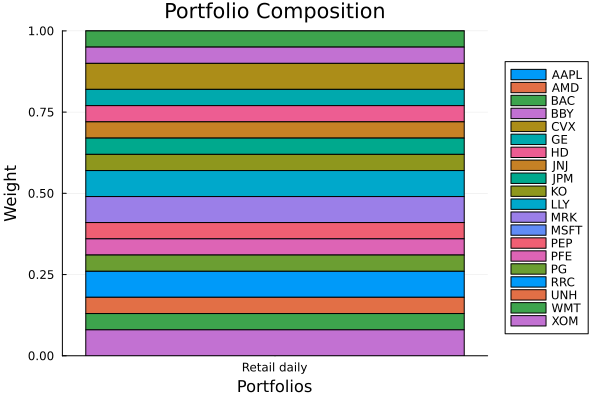

The source files can be found in examples/.
Profile: retail, daily
Each earlier example covers one part of the pipeline. A profile page runs the whole pipeline once, for one investor, so you can see how the choices fit together. This first profile rebalances a small retail account every day. Compute, trading cost and the size of the account set the limits here, and none of them rewards a more elaborate model.
Of the limits in the strategy decision framework, four shape this investor's choices.
- The rebalance is daily, so you pay for the optimisation every trading day. One convex solve is enough.
- Trading cost compounds when you trade every day. We cap how far each weight can move from the current book, and we charge a fee on every unit of weight traded. A trade then happens only where its expected gain is larger than its fee.
- A cap of 8% per name limits how much of the book one name can take.
- The account is small, so one whole share is a large part of a position. The finite allocation at the end moves the weights you hold away from the weights you solved for.
Reach for this profile when trading cost and account size bind harder than the model does. Keep the optimisation to one convex solve, put the turnover bound and the trading fee inside the optimiser, and size the last step to the cash you have. The fee is a deduction from the portfolio return, so it changes the weights only under an objective that uses that return.
using PortfolioOptimisers, CSV, TimeSeries, DataFrames, PrettyTables, Clarabel, StatsPlots, GraphRecipesresfmt = (v, i, j) -> begin return if j == 1 v else isa(v, AbstractFloat) ? "$(round(v*100, digits=3)) %" : v endend;1. Data and current book
We read the S&P 500 slice and take the investor's current book to be equal weight. The turnover budget in the next section measures every target weight against that book.
X = TimeArray(CSV.File(joinpath(@__DIR__, "..", "SP500.csv.gz")); timestamp = :Date)[(end - 252):end]rd = prices_to_returns(X)pr = prior(EmpiricalPrior(), rd)N = length(rd.nx)prices = vec(values(X)[end, :])current_book = fill(1 / N, N)slv = Solver(; name = :clarabel, solver = Clarabel.Optimizer, settings = Dict("verbose" => false), check_sol = (; allow_local = true, allow_almost = true))Solver
name ┼ Symbol: :clarabel
solver ┼ UnionAll: Clarabel.MOIwrapper.Optimizer
settings ┼ Dict{String, Bool}: Dict{String, Bool}("verbose" => 0)
check_sol ┼ @NamedTuple{allow_local::Bool, allow_almost::Bool}: (allow_local = true, allow_almost = true)
add_bridges ┴ Bool: true
2. The optimisation
One convex solve takes all the choices. The objective is MaximumUtility, the expected return net of the fee, less two times the variance. The weight bounds cap each name at 8%. The turnover budget keeps each target weight within 0.05 of the weight the investor has today. The fee is 0.1% of each unit of weight traded, and the solve deducts it from the expected return.
A minimum-risk objective would ignore the fee, as the tip says. A fee on each long position would not work either, because a fully-invested long-only book pays the same total fee whatever its weights are.
retail = optimise(MeanRisk(; obj = MaximumUtility(), opt = JuMPOptimiser(; pe = pr, slv = slv, wb = WeightBounds(; lb = 0.0, ub = 0.08), tn = Turnover(; w = current_book, val = 0.05), fees = Fees(; tn = Turnover(; w = current_book, val = 0.001)))))pretty_table(DataFrame("Asset" => rd.nx, "Current" => current_book, "Target" => retail.w); formatters = [resfmt], title = "Retail daily target against the current book")Retail daily target against the current book
┌────────┬─────────┬─────────┐
│ Asset │ Current │ Target │
│ String │ Float64 │ Float64 │
├────────┼─────────┼─────────┤
│ AAPL │ 5.0 % │ 0.0 % │
│ AMD │ 5.0 % │ -0.0 % │
│ BAC │ 5.0 % │ 5.0 % │
│ BBY │ 5.0 % │ 5.0 % │
│ CVX │ 5.0 % │ 8.0 % │
│ GE │ 5.0 % │ 5.0 % │
│ HD │ 5.0 % │ 5.0 % │
│ JNJ │ 5.0 % │ 5.0 % │
│ JPM │ 5.0 % │ 5.0 % │
│ KO │ 5.0 % │ 5.0 % │
│ LLY │ 5.0 % │ 8.0 % │
│ MRK │ 5.0 % │ 8.0 % │
│ MSFT │ 5.0 % │ 0.0 % │
│ PEP │ 5.0 % │ 5.0 % │
│ PFE │ 5.0 % │ 5.0 % │
│ PG │ 5.0 % │ 5.0 % │
│ RRC │ 5.0 % │ 8.0 % │
│ UNH │ 5.0 % │ 5.0 % │
│ WMT │ 5.0 % │ 5.0 % │
│ XOM │ 5.0 % │ 8.0 % │
└────────┴─────────┴─────────┘Compare the two weight columns. No target is further than 0.05 from its current weight or above the 8% cap, and most names keep their current weight.
We solve the same problem two more times, once without the fee and once without the cap, to show what each of them changes.
no_fee = optimise(MeanRisk(; obj = MaximumUtility(), opt = JuMPOptimiser(; pe = pr, slv = slv, wb = WeightBounds(; lb = 0.0, ub = 0.08), tn = Turnover(; w = current_book, val = 0.05))))no_cap = optimise(MeanRisk(; obj = MaximumUtility(), opt = JuMPOptimiser(; pe = pr, slv = slv, tn = Turnover(; w = current_book, val = 0.05), fees = Fees(; tn = Turnover(; w = current_book, val = 0.001)))))books = [retail, no_fee, no_cap]pretty_table(DataFrame("Book" => ["Retail", "Without the fee", "Without the cap"], "Turnover" => [sum(abs, b.w - current_book) for b in books], "Largest weight" => [maximum(b.w) for b in books], "Names traded" => [count(>(1e-4), abs.(b.w - current_book)) for b in books]); formatters = [resfmt], title = "What the fee and the cap change") What the fee and the cap change
┌─────────────────┬──────────┬────────────────┬──────────────┐
│ Book │ Turnover │ Largest weight │ Names traded │
│ String │ Float64 │ Float64 │ Int64 │
├─────────────────┼──────────┼────────────────┼──────────────┤
│ Retail │ 30.0 % │ 8.0 % │ 8 │
│ Without the fee │ 72.0 % │ 8.0 % │ 20 │
│ Without the cap │ 40.449 % │ 10.0 % │ 10 │
└─────────────────┴──────────┴────────────────┴──────────────┘Without the fee, the book trades more than twice as much and in more names. Without the cap, the largest weight goes past 8%.
3. Finite allocation
The investor has $10,000. GreedyAllocation turns the target weights into whole shares. It runs no mixed-integer solve, so it is cheap enough to run every day.
alloc = optimise(GreedyAllocation(), FiniteAllocationInput(; w = retail.w, prices = prices, cash = 10_000.0))invested = sum(alloc.shares .* prices)pretty_table(DataFrame("Asset" => rd.nx, "Target" => retail.w, "Shares" => round.(Int, alloc.shares), "Realised" => alloc.w); formatters = [resfmt], title = "\$10,000 to invest, \```math(round(Int, invested)) invested, \```(round(alloc.cash, digits = 2)) left in cash")$10,000 to invest, ```math(round(Int, invested)) invested, ```(round(alloc.cash, digits = 2)) left in cash
┌────────┬─────────┬────────┬──────────┐
│ Asset │ Target │ Shares │ Realised │
│ String │ Float64 │ Int64 │ Float64 │
├────────┼─────────┼────────┼──────────┤
│ AAPL │ 0.0 % │ 0 │ 0.0 % │
│ AMD │ -0.0 % │ 0 │ -0.0 % │
│ BAC │ 5.0 % │ 16 │ 5.173 % │
│ BBY │ 5.0 % │ 6 │ 4.701 % │
│ CVX │ 8.0 % │ 5 │ 8.695 % │
│ GE │ 5.0 % │ 7 │ 4.476 % │
│ HD │ 5.0 % │ 2 │ 6.231 % │
│ JNJ │ 5.0 % │ 3 │ 5.228 % │
│ JPM │ 5.0 % │ 4 │ 5.188 % │
│ KO │ 5.0 % │ 7 │ 4.387 % │
│ LLY │ 8.0 % │ 2 │ 7.269 % │
│ MRK │ 8.0 % │ 7 │ 7.678 % │
│ MSFT │ 0.0 % │ 0 │ 0.0 % │
│ PEP │ 5.0 % │ 3 │ 5.384 % │
│ PFE │ 5.0 % │ 10 │ 4.93 % │
│ PG │ 5.0 % │ 3 │ 4.478 % │
│ RRC │ 8.0 % │ 32 │ 7.847 % │
│ UNH │ 5.0 % │ 1 │ 5.249 % │
│ WMT │ 5.0 % │ 4 │ 5.613 % │
│ XOM │ 8.0 % │ 7 │ 7.471 % │
└────────┴─────────┴────────┴──────────┘4. The book
plot_stacked_bar_composition([retail], rd; xticks = (1:1, ["Retail daily"]))
This page was generated using Literate.jl.